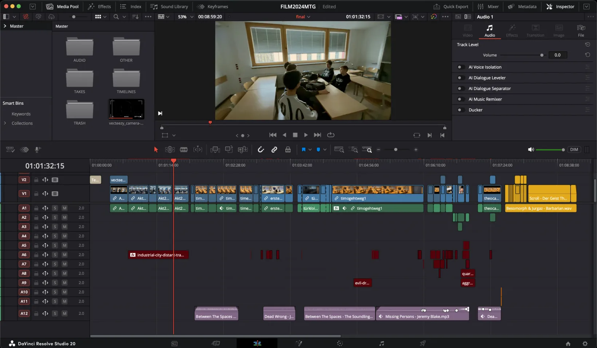
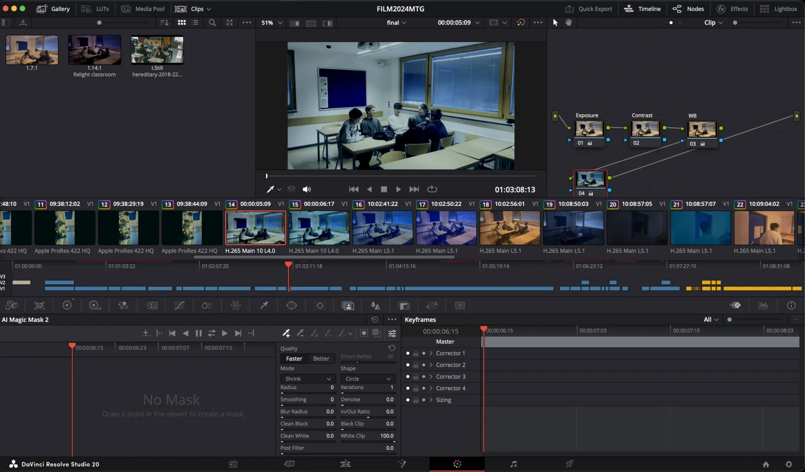

Film / Post-production
Der Geist Thomas
My first serious film project: an eight-minute school horror film rebuilt with classmates after our first attempt failed and about 24 hours remained.
- Role
- Camera · editing · colour correction · sound
- Timeline
- Dec 2024 · 48h challenge
- Team
- 8 classmates
- Tools
- iPhone 13 · Blackmagic Camera · DaVinci Resolve
- Result
- 8-min short film

Our first idea wasn't working, so we started over.
Several classmates were absent, and the original idea just wasn't coming together. With about 24 hours left, we dropped it and wrote a new horror story around the people and school rooms we still had.
It was my first real film project with a deadline this close. After the restart, the only goal was a film we could actually finish.
I was mostly behind the camera, shooting on an iPhone 13 with the Blackmagic Camera app. Afterwards, I did most of the post-production in DaVinci Resolve: the edit, the colour correction and some of the sound.
We made plenty of mistakes while shooting. Some shots were filmed vertically, and the white balance changed from shot to shot. Many rooms were also badly lit, so parts of the footage came out very noisy.

Fixing exposure and white balance took the longest. I went through the footage clip by clip until the shots looked like they belonged to the same film. There's hardly any real colour grading and no VFX; it was mostly repair work.
Some things couldn't really be fixed afterwards, though. I cropped the vertical shots at the end, which cost a lot of the frame, and noise reduction only helped a little with the dark shots.

My biggest takeaway: getting it right while filming saves far more time than fixing it in the edit. If I made the film again, I'd set the white balance before every scene and hold the phone horizontally (obviously). I'd also bring some extra light for the darker rooms.
Scrapping our first idea was still the right call. Next time, I'd just make it sooner.